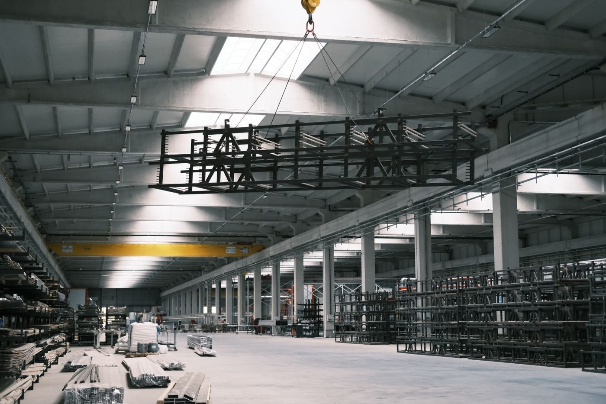
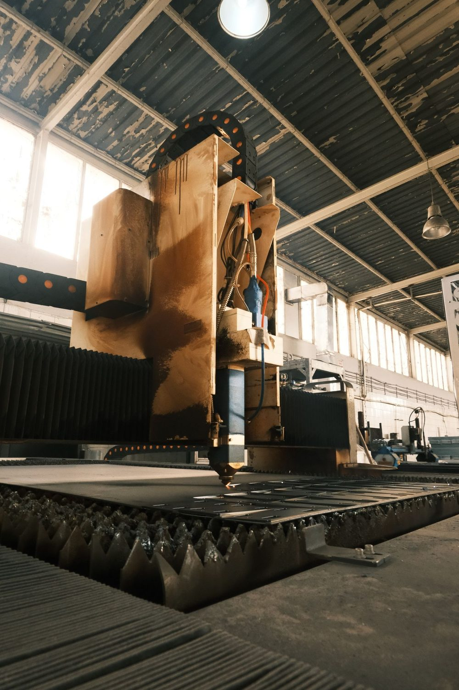
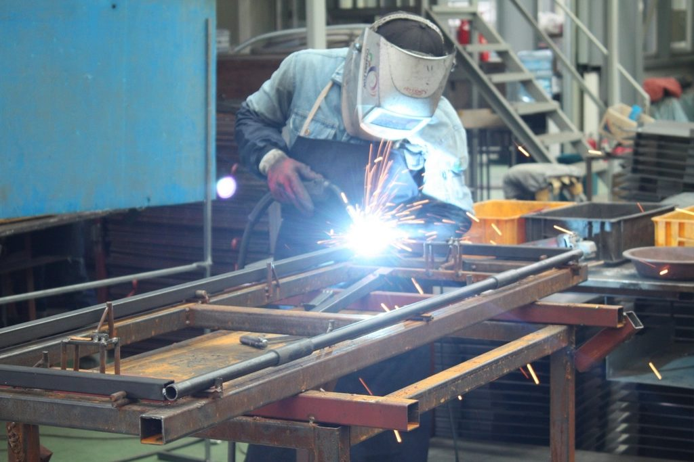
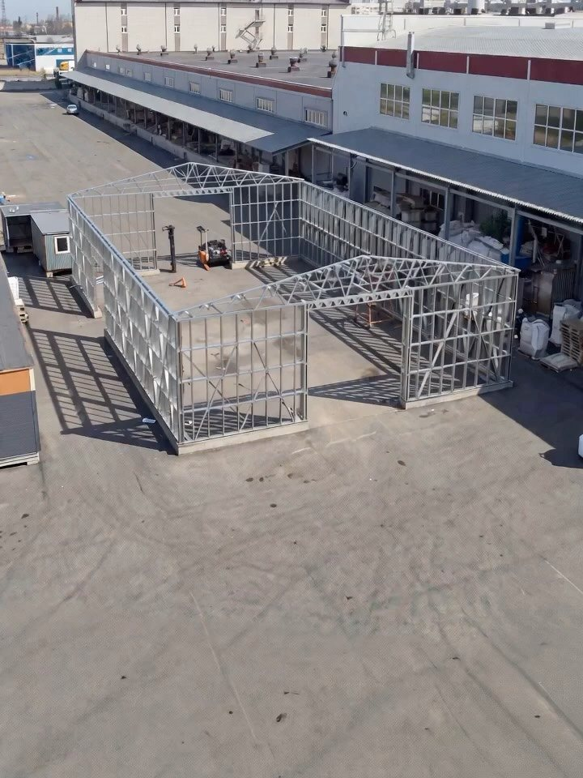
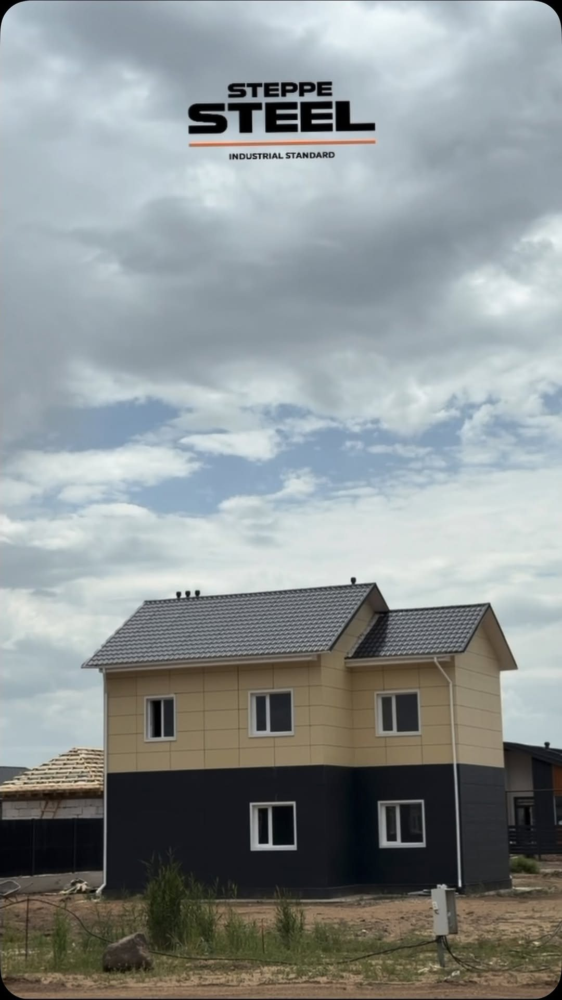
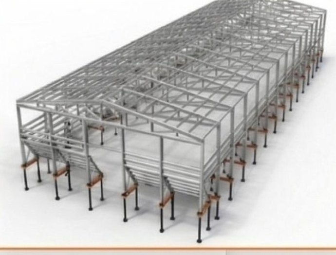

СОВРЕМЕННЫЙ ЗАВОД МЕТАЛЛОКОНСТРУКЦИЙ · КОСТАНАЙСКАЯ ОБЛ. · INDUSTRIAL STANDARD
Ангары, склады и промышленные объекты под ключ — ЛСТК и чёрный металл, полный цикл на собственном заводе
Проектируем, производим, комплектуем и отгружаем металлоконструкции любой сложности. Комбинируем ЛСТК и чёрный металл — фермы, колонны, опорные узлы. Плазменная и лазерная резка, заводская точность, готовность к крупным проектам.
Написать в WhatsApp →Шесть причин строить у нас
Завод полного цикла
Проектирование, производство, комплектация и монтаж — внутри одного завода. Один договор, одна ответственность, без посредников.
ЛСТК + чёрный металл
Комбинируем лёгкие профили и тяжёлый металл — фермы, колонны, опорные узлы. Реализуем объекты любой сложности и промышленного масштаба.
Инженерия под север
Расчёт под III снеговой район, ветер и морозы до −40 °C. Раздел КМ на каждый объект — а не типовой проект из другого климата.
Заводская точность
Плазменная и лазерная резка, одинаковая геометрия на всей партии. Детали собираются как конструктор — без подгонки на площадке.
Свои сроки
Расчёт и КП за 24 часа, монтаж собственной бригадой. Конструкции в наличии — быстрый старт и сдача к сроку.
Гарантия завода
Гарантия на металлокаркас от юрлица-производителя и срок службы оцинкованной стали 50+ лет без обслуживания.
Завод в цифрах
Промышленные здания под ваш профиль работы
Типовые и индивидуальные проекты. Любой размер — под ваш участок, ваш объём и ваши нагрузки.
Зернохранилище
Напольное хранение с расчётом давления зерна на стены. Свайный фундамент, до 140 м. Пакет КМ под субсидии МСХ РК.
24×60 · 24×90 · свой размер · Рассчитать → СКСклады и ангары
Тёплые и холодные, пролёт до 24 м без внутренних колонн.
18×36 · 24×60 · Рассчитать → АТАнгары для техники
Хранение и ремонт сельхоз- и спецтехники. Ворота под габарит.
18×36 · свой размер · Рассчитать → ПЦЦеха и заводы
Корпуса с крановыми нагрузками и инженерными сетями. ЛСТК + чёрный металл.
КМ под экспертизу · Рассчитать → СЗСпортивные залы
Пролётные здания для школ и акиматов, тёплый контур.
большие пролёты · Рассчитать → ИПИндивидуальный проект
Многопролётный комплекс, очередь строительства или нестандарт? Спроектируем под ваше ТЗ и площадку.
под ваше техзадание · Консультация инженера →Почему завод, а не гаражная гибка
| Параметр | Завод Steppe Steel | Кустарное производство |
|---|---|---|
| Толщина стали | до 3,5 мм, оцинковка | 1–2 мм, часто чёрный металл с грунтовкой |
| Геометрия профиля | одна линия профилирования — одинаковая на всей партии | ручная гибка, «как получилось» |
| Отверстия | выполнены на производстве — каркас собирается как конструктор | «болгаркой по месту» |
| Документация | полный комплект КМ/КМД для экспертизы и субсидий | чертёж на коленке |
| Расчёт нагрузок | III снеговой район, ветер, −40 °C по СП РК | типовой проект «из другого климата» |
| Гарантия | в договоре, от юрлица | устная |
Каждый профиль — по разделу КМ, с контролем геометрии на каждом этапе. Разницу видно в документации и на монтаже.
Получить консультацию инженераПроизводственный комплекс полного цикла
Проектирование → производство → комплектация → отгрузка — всё внутри одного завода. Комбинируем ЛСТК и чёрный металл: профилирование, плазменная и лазерная резка, сварочные участки, изготовление ферм, колонн и опорных узлов. Каждая деталь — по разделу КМ, с контролем на каждом этапе.



Фото носят иллюстративный характер. Реальные снимки нашего цеха и объектов — в Instagram @lstk.factory и по запросу.
ЛИНЕЙКА ПРОФИЛЕЙ
- Sigma — профили повышенной жёсткости
- C — несущие элементы
- П — направляющие и усиления
- Различные толщины под расчётную нагрузку
ОБОРУДОВАНИЕ
- Плазменная резка
- Лазерная резка
- Резьбонарезные станки
- Сварочные участки
ЧЁРНЫЙ МЕТАЛЛ
- Производство ферм и колонн
- Изготовление опорных узлов
- Болтовые соединения
- Полный комплект деталей
Профиль крупным планом
Не «поколение» — а чертёж. Переключайте Sigma, C и П — сечение отрисуется прямо на листе, с размерными выносками как в разделе КМ. Одна линия профилирования даёт одинаковую геометрию на всей партии, толщина оцинкованной стали — до 3,5 мм под расчётную нагрузку.
профиль жёсткости
- Назначение
- Несущие рамы и стойки, где нужна максимальная жёсткость при минимальном весе.
- Где работает
- стропильные и стеновые рамы, колонны каркаса.
- Ключевая роль
- продольная гофра-ребро в стенке поднимает момент сопротивления без роста металла.
несущие элементы
- Назначение
- Основной рабочий профиль каркаса — прогоны, пояса ферм, стойки.
- Где работает
- прогоны кровли и стен, элементы ферм.
- Ключевая роль
- отогнутые бортики держат геометрию, отверстия — с производства под болтовой монтаж.
направляющие и усиления
- Назначение
- Обвязки, направляющие, усиление узлов и вкладыши в С-профиль.
- Где работает
- базовые и верхние обвязки, обрамление проёмов, усиления.
- Ключевая роль
- открытый П-контур входит в С-профиль — узлы собираются точно в размер.
ТОЛЩИНА СТЕНКИ, ММ
Оцинкованная сталь · толщина до 3,5 мм · собственная линия профилирования · одинаковая геометрия на всей партии · комбинируем с чёрным металлом (фермы, колонны)
Подобрать профиль под ваш проект →Ангар для хранения зерна нового поколения
Костанайская область собрала 6,7 млн тонн зерна, а хранилища Казахстана вмещают около половины урожая. Своё зернохранилище Steppe Steel — на винтовых сваях без бетона, с наклонными стенами под боковое давление зерна. Хранение навалом, работа техники внутри, масштаб до 140 м.

КАЛЬКУЛЯТОР ЗЕРНОХРАНИЛИЩА
по вместимости на 1 м длины · наращивается секциями до 140 м; точный расчёт сделает инженер
Получить расчёт под мой объём Договор зимой — склад к августуСчитаем под снега севера Казахстана
Север Казахстана — III снеговой район: расчётная снеговая нагрузка около 180 кгс/м², метели и неравномерные снеговые мешки на кровле, морозы до −40 °C. Каждый каркас Steppe Steel проходит инженерный расчёт по действующим СП РК под конкретную площадку — а не строится по типовому проекту из другого климата.
Получить консультацию инженераЧто входит в комплект металлокаркаса
- Несущие рамы и колонны (оцинкованный С/U-профиль до 3,5 мм)
- Прогоны кровли и стен
- Связи и раскосы жёсткости
- Крепёж и метизы — по спецификации, с запасом
- Маркировка каждой детали по чертежу КМД
- Комплект документации: КМ, КМД, паспорта, схемы монтажа
Смета прозрачная: каркас, ограждающие конструкции, доставка и монтаж — отдельными строками. Доплат за то, что мы не учли, не бывает.
Шесть шагов — один договор
-
01
Заявка
Форма, звонок или WhatsApp
5 минут -
02
Расчёт инженером
Предварительная смета и спецификация
24 часа -
03
Договор и проект КМ/КМД
Фиксируем цену и срок
7–10 дней -
04
Производство
Профилирование, маркировка, комплектация
15–20 дней -
05
Доставка
Авто или ж/д от станции Пресногорьковская
2–5 дней -
06
Монтаж
Наша бригада, сдача по акту
10–15 дней
Цена и срок зафиксированы в договоре после утверждения КМД. Оплата — по этапам.
Завод на трассе Костанай — Петропавловск, в центре зерновых регионов Казахстана
Отгружаем автотранспортом и по железной дороге — станция Пресногорьковская находится прямо в селе Троебратское. Быстрая доставка по Костанайской, Северо-Казахстанской и Акмолинской областям и по всему Казахстану.
Пока конкуренты везут каркас из Алматы за 2 000 км — мы уже в вашем регионе.
- авто + ж/д — два канала отгрузки прямо с площадки
- зерновой пояс — Костанайская, СКО и Акмолинская области рядом
- по РК — доставка комплекта по всему Казахстану
Наши каркасы — вживую и в проекте
Реальные фото монтажа Steppe Steel и 3D-визуализации зернохранилищ. Больше объектов и процессов — в Instagram @lstk.factory.





Фото — реальные объекты Steppe Steel (Instagram @lstk.factory); 3D — наши проектные визуализации.
Рассчитаем ваш объект за 24 часа
Три шага — и инженер завода пришлёт предварительный расчёт и КП. Бесплатно, без обязательств.
Вопросы, которые задают перед строительством
В.01Какие исходные данные нужны для расчёта стоимости?
Назначение здания, габариты (длина × ширина × высота) или объём хранения в тоннах, место строительства и желаемый срок. Этого достаточно — остальное инженер уточнит при звонке и учтёт в расчёте за 24 часа.
В.02Что такое КМ и КМД?
КМ — «конструкции металлические»: принципиальные решения каркаса и расчёты нагрузок; этот раздел нужен для экспертизы, банка и получения субсидий. КМД — «конструкции металлические деталировочные»: рабочие чертежи каждой детали, по которым работает наша производственная линия и монтажная бригада. Оба комплекта делают инженеры завода и передают вам.
В.03Какие нагрузки учитываются при проектировании?
Снеговая (север Казахстана — III снеговой район, расчётная около 180 кгс/м², включая снеговые мешки), ветровая, собственный вес конструкций и кровли, полезные нагрузки (кран-балки, подвесное оборудование), для зернохранилищ — давление зерна на стены. Расчёт — по действующим СП РК.
В.04Как рассчитать площадь склада под зерно?
Ориентир: 1 тонна зерна занимает 1,3–1,5 м³ насыпью. При высоте бурта 2,5–3 м нужно примерно 0,5–0,6 м² пола на тонну: на 1 000 т — около 550–600 м². Скажите объём урожая — инженер посчитает точную площадь и смету.
В.05Что входит в комплект металлокаркаса?
Несущие рамы, прогоны, связи жёсткости, весь крепёж по спецификации и комплект документации КМ/КМД. Каждая деталь промаркирована по чертежу — каркас собирается как конструктор, без подгонки на площадке. Ограждающие конструкции (профлист, сэндвич-панели), ворота и окна — отдельными строками сметы.
В.06Какой фундамент нужен?
ЛСТК в разы легче чёрного металлокаркаса и кирпича, поэтому достаточно облегчённого фундамента: монолитная лента, столбчатый или свайный — в зависимости от грунта и здания. Требования к фундаменту входят в проект: передадим их вашему подрядчику или возьмём работы на себя.
В.07Каков срок службы оцинкованных конструкций?
Расчётный срок службы каркаса из оцинкованной стали — 50 и более лет без покраски и обслуживания: цинковое покрытие защищает металл от коррозии весь срок эксплуатации. Для сравнения: чёрный металл с лакокрасочным покрытием требует обновления покраски каждые несколько лет.
В.08Можно ли расширить здание в будущем?
Да. Каркасная схема ЛСТК позволяет удлинять здание секциями по существующему проекту без демонтажа. Скажите об этом на старте — заложим возможность расширения в КМ бесплатно.
В.09Как выполняется монтаж?
Монтаж ведёт бригада завода по чертежам КМД: устройство фундамента (или приёмка вашего), сборка и выверка рам, установка прогонов и связей, монтаж ограждающих конструкций, ворот и узлов, сдача по акту. Болтовые соединения — без сварки на площадке, поэтому монтаж возможен и зимой.
В.10В чём особенности строительства зернохранилища?
Стены рассчитываются на боковое давление зерна, предусматриваются усиленные нижние пояса, вентиляция подпольными или напольными каналами, завальные ямы и ворота под ваш транспорт. Проект учитывает технологию: напольное хранение, высота бурта, схема загрузки-выгрузки.
В.11Чем заводское производство лучше?
Одинаковая геометрия каждого профиля с одной линии, оцинковка вместо грунтовки, отверстия с производства вместо «болгарки по месту», маркировка деталей, документация и заводская гарантия. На площадке ничего не подгоняется — здание собирается быстрее и служит дольше.
Монтируем до снега
Цикл строительства — 30–45 дней. Заключите договор сейчас — успеем закрыть контур здания до конца октября, и следующий урожай ляжет в ваш собственный склад, а не в чужой элеватор.